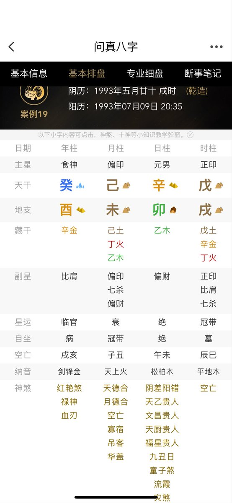

Jahseh
@godspeedyou50
@Liu89899552 @Kongkongda5882 这看起来也不是今年的事儿啊，应该是二三年，最多二四年，等他回复我再仔细瞧瞧吧，按理说那时候本身日支挺要命的卯冲辛金而又冲了酉。我还特地排了盘 要发生也活不到今年

PeungJeh
@Liu89899552
@Kongkongda5882 我这个兄弟三十岁刚过完生日十天就被人打死了😭 有什么信息吗请问解惑一下请教 https://t.co/lARl3PLDlK